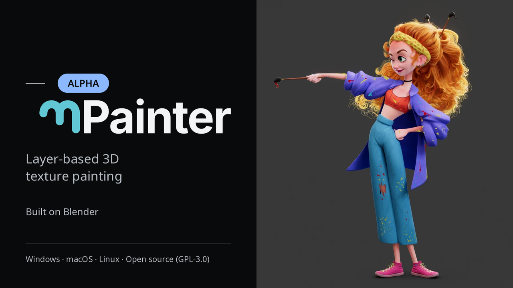
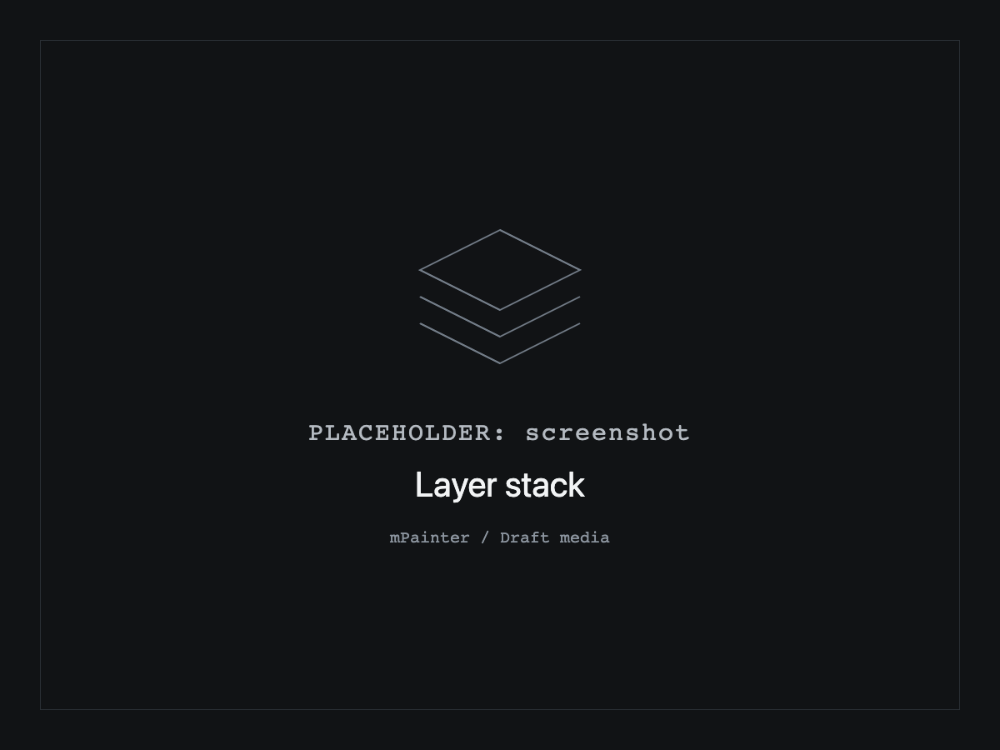
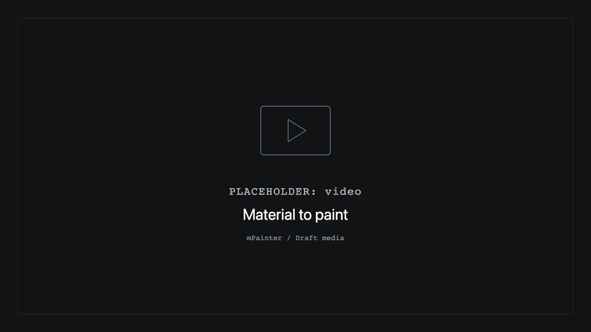

Familiar tools.
Blender at heart.
A layer-based 3D texturing app that feels and works like the tools you know. At its core, mPainter is a branch of Blender.

- WindowsIn alpha
- macOSIn alpha
- LinuxIn alpha
01 / The workflow
Build it in layers.
Make it your own.
Paint in the viewport, organize your materials and keep your process close at hand.

- Layer stack
- Build up your material with fill layers and folders.
- Paint in 3D
- Paint directly on your model in the 3D viewport.
- Mask Generators
- Use generated masks in your layer workflow.
- Pre-compose / cache layer
- Pre-compose a layer and cache its result.
- Assets panel
- Keep your assets together in a dedicated panel.
02 / Built on Blender
Your nodes.
Your next material.
Build node-based procedural materials in Blender, then import them into mPainter as Material Presets. With Blender at the core, it’s easy to bring in your favorite Blender features.
- CreateBlender node material
- ImportMaterial Preset
- UseYour layer stack
Keep a material for next time
Save a folder as a Material Preset and bring it into your next project.
A place to start
Find free materials at Poly Haven , or bring in your own Blender node materials.

03 / Early access
Start with the alpha.
Grow with mPainter.
An early version, open to exploration. Alpha software may have bugs.
Windows — in alpha
macOS — in alpha
Linux — in alpha
Alpha pricing
15 USD
Pay what you want, with a 15 USD minimum.
All updates up to and including 1.0 are included.
Buy the alphaDraft placeholder — checkout is not connected yet.
Open source / GPL-3.0
The code is open.
Your purchase supports the work.
mPainter is open source under GPL-3.0. The source code is free. We sell ready-made builds to support development.
Explore the source on GitHubBefore you start
A couple of things to know.
How do I open the unsigned macOS app?
On first launch, right-click the app and choose Open. The macOS alpha build is unsigned.
What should I expect from the alpha?
Alpha software may have bugs. Windows, macOS and Linux are each in alpha.